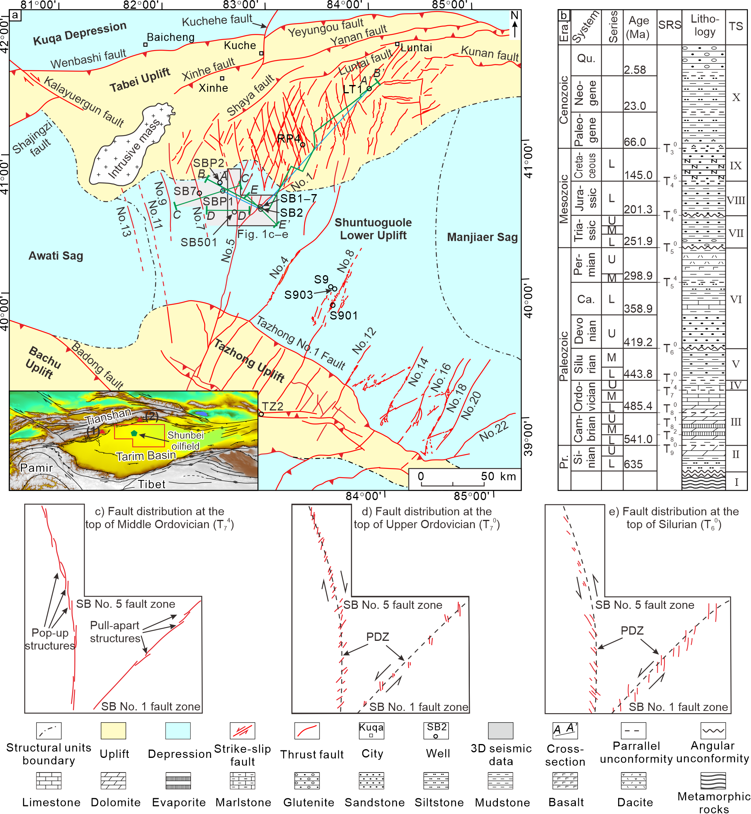
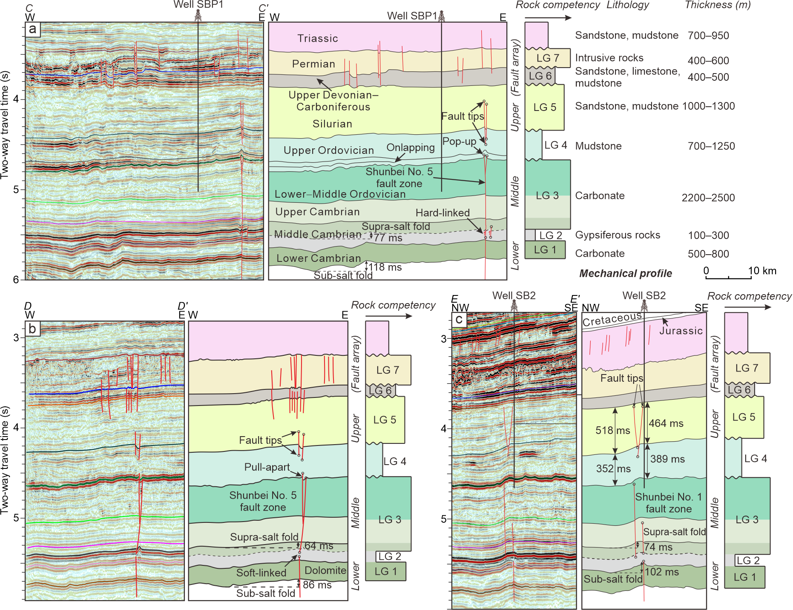
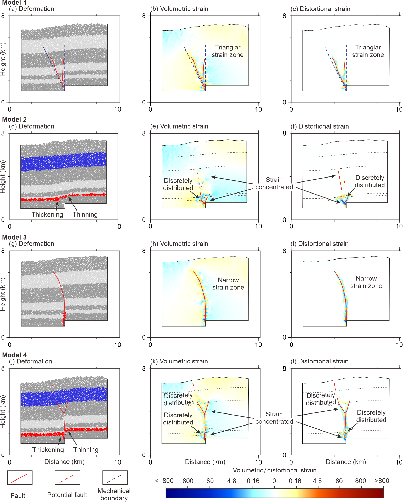
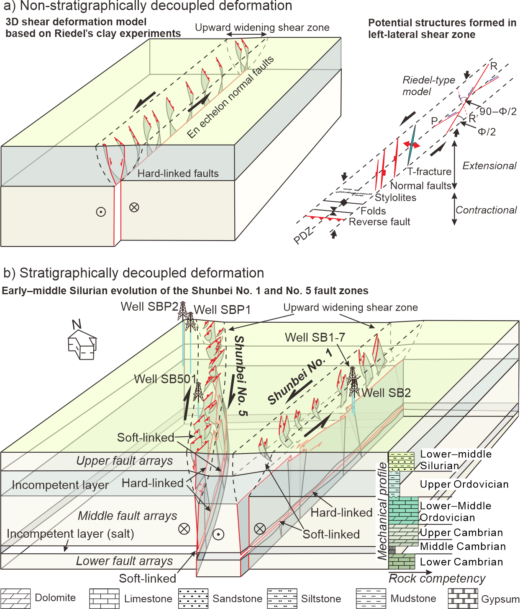

Title
Control of mechanical stratigraphy on the stratified style of strike-slip faults in the central Tarim Craton, NW China
Authors
Jiajun Chen1, 2， Dengfa He1, 2, Fanglei Tian1, 2, Cheng Huang3, Debo Ma4, Weikang Zhang1, 2
- School of Energy Resources, China University of Geosciences Beijing, Beijing 100083, China
- Key Laboratory of Marine Reservoir Evolution and Hydrocarbon Enrichment Mechanism, Ministry of Education, Beijing 100083, China
- Northwest Oilfield Branch Company, SINOPEC, Urumqi, Xinjiang 830011, China
- Research Institute of Petroleum and Development, PetroChina, Beijing 100083, China
Abstract
The large-scale (tens to hundreds of kilometers long) but small-displacement (<2 km) strike-slip faults in the Shunbei region of the Tarim Basin, NW China, provide an opportunity to document the role of mechanical stratigraphy in an intracratonic strike-slip situation. Uniaxial compression test results and dipole acoustic logging data illustrate that the lower Paleozoic mechanical profile in the Shunbei region consists of 2 incompetent layers (middle Cambrian and Upper Ordovician) and 3 competent layers (Sinian–lower Cambrian, upper Cambrian–Middle Ordovician, and Silurian). Borehole and high-resolution 3D seismic data illustrate that the 3 competent layers are characterized by low-amplitude folds and isolated brittle faults. The discrete element method (DEM) modeling results indicate that mechanical stratigraphy is an important factor controlling the softlinked faulting style that is independent of multiphase deformation. A pre-existing structure promotes the formation of narrow and localized fault zones. The early–middle Silurian evolution of the Shunbei No. 1 fault zone reflects a classic stratigraphically decoupled deformation model: the middle fault arrays (upper Cambrian–Middle Ordovician layers) and en echelon normal faults (Silurian layer) synchronously experienced leftlateral slip. These two styles of faulting have different geometries (fault dips, slips, and arrangements) but are kinematically coupled and genetically related. This proposed deformation model provides mechanical support to document deeply buried structures by characterizing genetically related shallow structures, which may be widely employed as multiphase inheritance structures with mechanical stratigraphy. We also point out that vertical fault connectivity is a key research aspect of hydrocarbon exploration in the Shunbei oilfield.

图1 塔里木盆地中部顺托果勒低隆及邻区深层主干断裂分布图（a）、综合柱状图（b）、中奥陶统顶面（c）、奥陶系顶面（d）及志留系顶面（e）断裂分布图 Caption: Distribution map of (a) the structural elements in the Paleozoic tectonostratigraphic unit and intracratonic small-displacement (< 2 km) strike-slip faults of the Shuntuoguole Lower Uplift, (b) stratigraphic column, and fault distributions (modified after 邓尚等, 2018) at the © top of the Middle Ordovician (T74), (d) top of the Ordovician (T70), and (e) top of the Silurian (T60). (1) = Paleozoic rock sampling location; (2) = Mesozoic rock sampling location; SRS = seismic reflection surface; TS = tectonostratigraphic unit; U = Upper; M = Middle; L = lower; Qu. = Quaternary; Ca. = Carboniferous; PDZ = principal displacement zone.

图6 顺北1号与5号断裂带地震–地质结构剖面 Caption: Interpreted seismic cross-sections and related mechanical profiles (see Fig. 1a for location). a) W–E-oriented cross-section showing the pop-up structure of the Shunbei No. 5 fault zone (C–C’); b) W–E-oriented cross-section showing the pull-apart structure of the Shunbei No. 5 fault zone (D–D’); c) NW–SE-oriented cross-section showing the Shunbei No. 1 fault zone (E–E’).

图8 顺北走滑断裂带的四组数值模拟实验结果，包括构造变形（a, d, g, j）、体积应变（b, e, h, k）和变形应变（c, f, i, l） Caption: 2D numerical simulation results of the 4 models, including the (a, d, g, and j) deformations, (b, e, h, and k) volumetric strains, and (c, f, i, and l) distortional strains.

图10 一种左行走滑断裂产生的左行剪切变形模式及其潜在的定向构造（a）与顺北1号和5号断裂带早–中志留世的分层剪切变形模式（b） Caption: Comparison of the (a) non-stratigraphically decoupled deformation (modified after Fossen, 2016) and potential structures formed in the upward widening shear zone and (b) early–middle Silurian stratigraphically decoupled deformation in the Tarim intracratonic left-lateral slip scenario (e.g., Shunbei No. 1 and 5 fault zones). PDZ is the principal displacement zone; R and R′ are the synthetic and antithetic shear fractures, respectively; P is the secondary shear fracture and connects the R and R′ surfaces; Φ is the angle of internal friction.
Acknowledgments
The authors wish to thank the Northwest Oilfield Branch Company (SINOPEC) and Research Institute of Petroleum Exploration and Development (CNPC) for granting access to the data. The numerical calculations in this manuscript were performed at the computing facilities of the High Performance Computing Center (HPCC) of Nanjing University. This research was financially supported by the National Natural Science Foundation of China [grant number U19B6003-01] and the National Key Research and Development Program of China [grant number 2017YFC0601405]. The authors would like to thank Julia K. Morgan for generously sharing their postprocessing scripts and algorithms, which have been used to process and display the model outputs presented here.